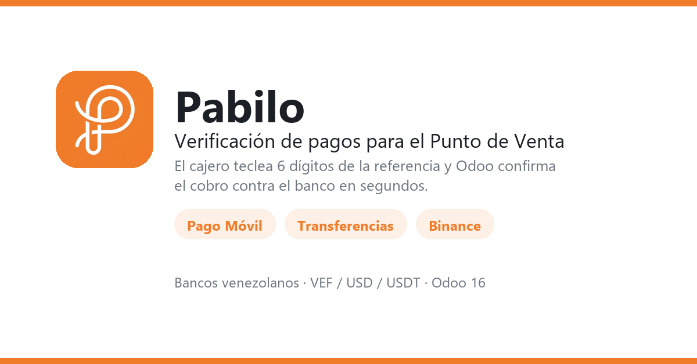

En Venezuela el cliente paga y muestra la referencia. Verificarla a mano significa abrir la app del banco, buscar el movimiento y volver al POS con la cola esperando. Este módulo lo resuelve dentro de Odoo: el cajero teclea los últimos 6 dígitos de la referencia y Odoo confirma el cobro contra el banco en segundos.
|
1
|
El cliente paga por pago móvil, transferencia o Binance a tu cuenta. |
|
2
|
En el POS el cajero elige el método Pabilo, teclea los 6 últimos dígitos de la referencia en un teclado numérico y confirma la fecha, que ya viene rellenada con la de hoy. |
|
3
|
Odoo consulta el banco a través de Pabilo y confirma la línea de pago. Si algo no cuadra, el cajero ve el motivo exacto —monto que no coincide, referencia ya usada, pago no encontrado— y no una espera indefinida. |
|
Un método, tres medios Pago móvil, transferencias y Binance con el mismo método de pago. |
Varias cuentas bancarias Si tienes más de una cuenta, el cajero elige a cuál llegó el pago. |
|
Sin cobros duplicados Una referencia ya usada se rechaza, así el mismo pago no salda dos ventas. |
Trazabilidad La referencia y el ID de Pabilo quedan guardados en el pago del POS y salen en el recibo. |
|
Errores en claro «El monto no coincide», «pago no encontrado», «referencia ya usada»: el cajero ve el motivo real, no un error genérico. |
Cuentas sincronizadas Tus cuentas de Pabilo se sincronizan a Odoo en modo solo lectura. |
|
También fuera del POS Verificación manual y enlaces de pago desde las transacciones de pago. |
Multi-moneda VEF, USD y EUR. |
Odoo 17.0, ediciones Community y Enterprise. Requiere los módulos Punto de Venta, Contabilidad y Pagos.
Bancos soportados vía Pabilo: Banco de Venezuela, Provincial, Mercantil, Banesco, Banco Plaza, Binance Pay y cuentas por notificación.